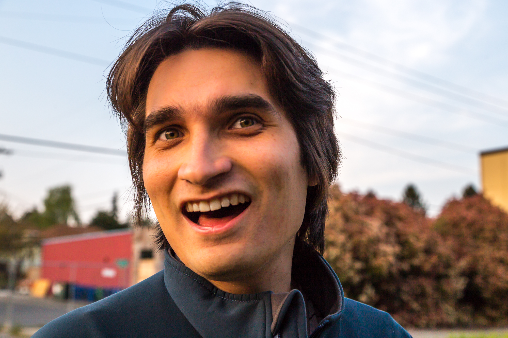

About Me

My name is Mark Erik Salvatier, welcome to my handcrafted portfolio. It was a little furstrating at times to build, but rewarding as well in the end when I had it finished and done well.I'm looking forward to recreating it with Bootstrap which should be easier and more straightforward to do from what I've seen of it so far, though I imagine there'll be frustrations unique to Bootstrap too!
I should tell you a little more about myself and what I enjoy doing outside of the boot camp. One of my favorite activities is reading, though in recent years I haven't found as much time for as I did when I was younger; primarily I enjoy Science Fiction novels,though Fantasy is good as well! Some of my favorite books were written by Frank Herbert, especially the entire Dune series. Related to that I also enjoy writing, the same types of stuff s Ilike to read; whodathunk? At the moment in fact I'm in the middle of editing, rewritings(parts), and adding to the second draft of a long form work I've been working for the last couple of years, it is simultaenousy frustrating and invigorating.
Not everything Ilike to do is related to books though! Video games are fun as well. My love of videos games developedearly from watching over my brother's shoulder as he played Civilization, Myst, and the Command and Conquer series. Soon I was playing too. I really enjoyed the Mass Effect series, yes even the newest game, and the other gamesfrom Bioware Studios.